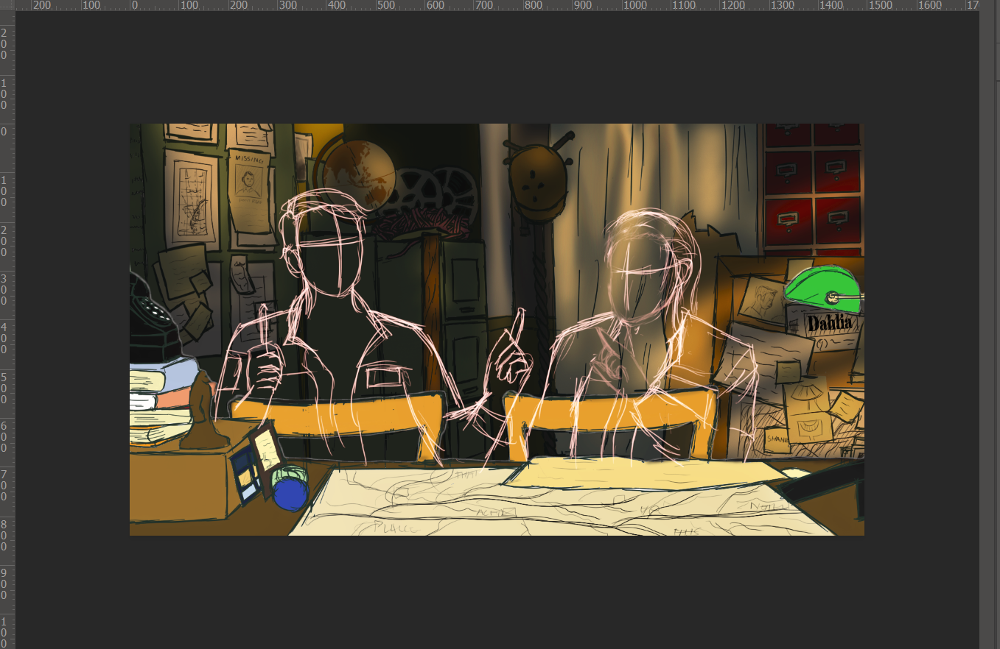

Personal Information:
- BSCS-12-C Student at SEECS, NUST H-12
- Lab Assistant to Dr.Alexander Hilbert
Dr. Alexander Valentin Hilbert is a research scientist aboard the Hephaestus,
secretly studying the effects of a man-made virus called Decima on the human body.
Born Dmitri Ilyich Volodin, Hilbert grew up near Volgograd, Russia. He was one of the
youngest of several siblings, along with his sister Olga. He doesn't remember his other
siblings well as they succumbed to radiation poisoning following the Volgograd meltdown.
The meltdown occurred when Hilbert was four years old, leaving him bald before the age of five.
The last of Hilbert's family died when he was nine years old. source
Education
BSCS
Currently ongoing at NUST-SEECS, Islamabad Pakistan
A-levels
Beaconhouse Tipu Sultan Campus, Rawalpindi
O-levels
Beaconhouse Educational Complex, Islamabad
Who am I?
Known to be somewhat of a jack of all trades among my friends, I can do a bit of everything and am
into a bit of everything. Sports, Movies, Books, niche interests, knitting a scarf, coding a game,
playing basketball, photography, singing, drawing, deriving navier stokes equations, identifying minerals,
graphic design, writing, the list goes on.
One drawback being I can only ever get slightly above average in everything, because of the sheer amount of things I do.
Here is a drawing of mine that's in progress:
27th, February, 2024
Copyright @Zikrullah.Rehman